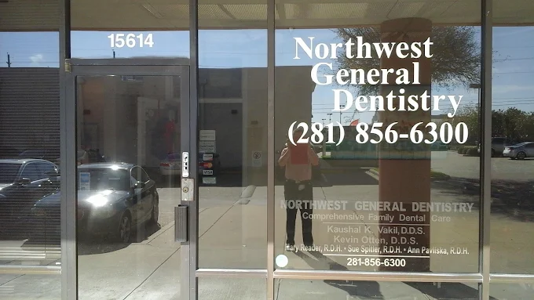
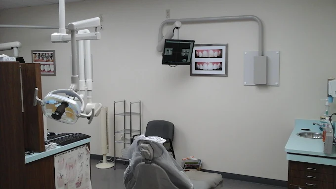

May help with
Selected chewing surfaces
Sealants may reduce cavity risk in the grooves and pits they cover.
Preventive care · Houston, Texas
We offer dental sealants in Houston for children, teens, and adults who may benefit from added protection on selected back teeth. We begin with an examination to see which teeth, if any, are good candidates for a dental sealant.
Regular office hours are Monday–Friday with daily hours varying. Call before your visit to confirm scheduling.
What a sealant covers
Back teeth have pits and grooves where plaque and food can remain even with consistent brushing. A dental sealant is placed over selected chewing surfaces to create a barrier over those vulnerable areas.

Children and teens with newly erupted permanent molars are often evaluated for sealants. Some adults may also benefit, depending on the tooth surface and cavity risk.
An examination—not a checklist—determines whether a sealant fits the tooth.
May help with
Sealants may reduce cavity risk in the grooves and pits they cover.
Still needed
Brushing, cleaning between teeth, fluoride, balanced habits, exams, and cleanings still matter.
Your Houston office
Northwest General Dentistry serves patients from Houston and nearby areas including Eldridge / West Oaks, Memorial, and Briar Forest at one verified office.

Northwest General Dentistry
15614 FM 529Wheelchair-accessible parking, entrance, and restroom are available. Call if you need help planning your arrival.
Plan before your visit
All PPO plans, subject to plan verification. Because benefits vary by plan and service, call the office to verify plan-specific benefits before treatment.
The number of teeth evaluated, whether placement is recommended, and how the visit is coordinated may affect the estimate.
Call to verify your plan →
Preventive-care feedback
“I always leave with a new technique on cleaning my teeth. She sincerely likes to educate and I like that.”
From examination to ongoing checks
The exact visit depends on the teeth and your care plan. These are the main stages that may be involved.
The dental team checks eruption, tooth structure, restorations, and cavity risk.
The selected chewing surface is cleaned and prepared so the material can adhere.
Sealant material is applied to selected grooves and may be hardened with a curing light.
The sealant and bite are checked after placement.
Continue home care and routine visits so the teeth and sealants can be checked over time.
Sealants cover selected grooves, while fluoride supports the enamel more broadly. Keep brushing with fluoride toothpaste, cleaning between teeth, and attending recommended exams and professional teeth cleanings. Your dentist may also use dental X-rays when appropriate to evaluate areas that are difficult to see.
Dental sealant questions
These answers can help you prepare for a conversation with the dental team.
They may change in appearance with normal exposure to foods and beverages. The dental team can assess noticeable changes during routine visits.
It depends on the tooth and restoration. An examination is needed to decide whether placement is appropriate.
They may not. The tooth’s chewing-surface anatomy is one factor considered during the examination.
Some patients may briefly notice the material during placement. Ask the dental team what to expect for the material being used.
In some cases, sealant placement can be coordinated with a routine appointment. The dental team will determine which preventive services fit the visit.
There is no single lifespan for every tooth or patient. The dental team can check a sealant for wear or chipping and decide whether repair or replacement should be discussed.